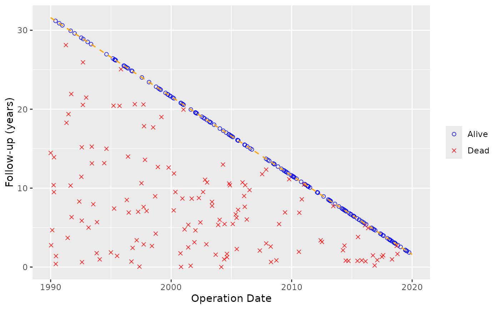
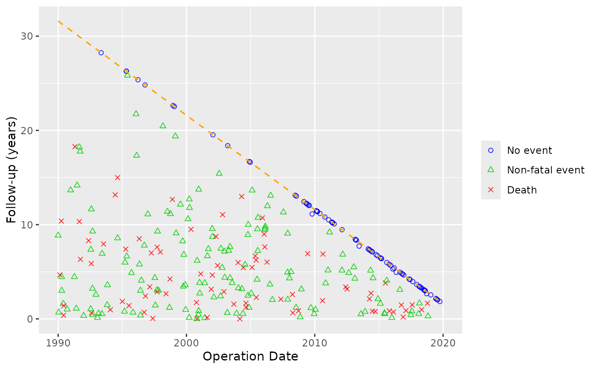

Generate Sample Goodness-of-Follow-Up Data
Source:R/goodness-followup.R
sample_goodness_followup_data.RdProduces a reproducible data frame suitable for testing and demonstrating
goodness_followup(). Operation dates are drawn uniformly over the study
period; death and non-fatal event times are simulated from exponential
distributions and censored at each patient's potential follow-up. The
deads column approximates active/systematic death ascertainment by
restricting to deaths within 90% of the potential follow-up window,
mirroring the distinction between dead and deads in the legacy
tp.dp.gfup.R template.
Arguments
- n
Integer number of patients to simulate. Default
300.- origin_year
Integer calendar year corresponding to zero in
iv_opyrs. Default1990.- study_start, study_end
Date (or coercible string) defining the operation date window.
- close_date
Date (or coercible string) for the follow-up closing date. Must be >=
study_end.- death_rate
Annual hazard for death (exponential model). Default
0.05(median survival ~14 years).- event_rate
Annual hazard for the non-fatal event (exponential model). Default
0.08(median time-to-event ~9 years).- seed
Integer random seed for reproducibility. Default
42.
Value
A data frame with columns:
iv_opyrsYears from
origin_yearto operation date.iv_deadFollow-up years to death or censoring.
deadLogical — all-source death indicator.
iv_eventFollow-up years to non-fatal event or censoring.
ev_eventLogical — non-fatal event indicator.
deadsLogical — active/systematic death indicator (subset of
dead).
Details
The column names match the defaults of goodness_followup():
iv_opyrs, iv_dead, dead. The event-panel columns (iv_event,
ev_event, deads) are included so callers can pass event_col,
event_time_col, and death_for_event_col directly.
Examples
dta <- sample_goodness_followup_data()
head(dta)
#> iv_opyrs iv_dead dead iv_event ev_event deads
#> 1 29.5694 2.0261 FALSE 2.0261 FALSE FALSE
#> 2 6.4834 6.9027 TRUE 4.0813 TRUE TRUE
#> 3 14.4342 5.4468 TRUE 5.4468 FALSE TRUE
#> 4 25.4324 6.1630 FALSE 0.6137 TRUE FALSE
#> 5 3.4251 13.1369 TRUE 6.9232 TRUE TRUE
#> 6 24.1620 7.4334 FALSE 7.4334 FALSE FALSE
# Death panel
goodness_followup(dta) +
ggplot2::scale_color_manual(
values = c("Alive" = "blue", "Dead" = "red"), name = NULL
) +
ggplot2::scale_shape_manual(values = c(1, 4), name = NULL) +
ggplot2::labs(x = "Operation Date", y = "Follow-up (years)")

# Event panel
goodness_event_plot(
dta,
event_col = "ev_event",
event_time_col = "iv_event",
death_for_event_col = "deads",
event_levels = c("No event", "Relapse", "Death")
) +
ggplot2::scale_color_manual(
values = c("No event" = "blue", "Relapse" = "green3", "Death" = "red"),
name = NULL
) +
ggplot2::scale_shape_manual(values = c(1, 2, 4), name = NULL) +
ggplot2::labs(x = "Operation Date", y = "Follow-up (years)")
